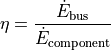
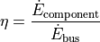

v0.3.0 - Mayer’s Merit (May, 21, 2020)¶
TESPy version 0.3.0 - Mayer’s Merit comes with a lot of new features and a publication in the Journal of Open Source Software. The paper is available at the website of the JOSS.
BibTeX citation:
@article{Witte2020,
doi = {10.21105/joss.02178}
year = {2020},
publisher = {The Open Journal},
volume = {5},
number = {49},
pages = {2178},
author = {Francesco Witte and Ilja Tuschy},
title = {{TESPy}: {T}hermal {E}ngineering {S}ystems in {P}ython},
journal = {Journal of Open Source Software}
}
New Features¶
Make entropy
myconn.s.valormyconn.s.val_SIand specific volumemyconn.vol.valormyconn.vol.val_SIrespectively available after simulation (PR #172).Connections, components and busses are now easily accessible on every network. Connections now have a label, which can be specified individually, the default value of the label is given by the following logic.
source:source_id_target:target_id, where source and target are the labels of the connected components.Access the objects with:
mynetwork.busses[‘mybuslabel’]
mynetwork.components[‘mycomponentlabel’]
mynetwork.connections[‘myconnectionlabel’]
(PR #173)
Specification of the CoolProp back end is now possible. You can specify the back end by adding it in front of the fluid’s name on creating a network, for example:
from tespy.networks import network fluid_list = ['air', 'BICUBIC::water', 'INCOMP::DowQ'] network(fluids=fluid_list)
If you do not specify a back end
HEOSwill be applied (as forairin this example). This has been the case until now as well, thus no further changes are required to match an 0.2.x application to the 0.3.x API. For all back ends available please refer to the fluid properties section. To specify the fluid vector on a connection leave out the back end specification, e.g.:myconnection.set_attr(fluid={'DowQ': 1, 'water': 0, 'air': 0})
(PR #174).
Unsetting a value is now also possible using
Noneinstead ofnp.nan(PR #178).It is possible to choose a base for your components when adding them to a bus:
'component': This means, the efficiency definition of the bus is
'bus': This means, the efficiency definition of the bus is
These definitions also apply to the characteristic line usage. The default setting (if you do not specify the base) uses
'base': 'component'. You therefore do not need do adapt your scripts regarding this change. For an example of the bus usage see the examples section below (PR #157).Within the busses’ printouts the efficiency of every component on the respective bus is displayed. Additionally, it is possible to get the bus value and the efficiency of a specific component on a specific bus.
to get the bus value use
mycomp.calc_bus_value(mybus)andto get the efficiency use
mycomp.calc_bus_efficiency(mybus)
where
mycompis a component object andmybusis a bus the component has been added to (PR #157).New component
tespy.components.nodes.droplet_separatorfor separation of a single fluid in two phase state into saturated gas and saturated liquid phase. An example is given in the docstrings of the class documentation (PR #186).New component
tespy.components.heat_exchangers.parabolic_troughfor concentrated solar power simulation. An example is given in the docstrings of the class documentation (PR #191).New property
min_iterof thetespy.networks.networks.networkclass, allowing to specify the minimum amount of iterations before a solution is accepted (PR #197).
Documentation¶
Documentation has been updated according to the API-changes.
Fixed many typos on the online-documentation.
Parameter renaming¶
Adding components to a bus now requires
'comp'instead of'c'and'param'instead of'p'(PR #157).The former parameter
kAhas been renamed tokA_charas the behavior in offdesign was following a characteristic instead of a constant value. Additionally a new parameterkAhas been implemented, which represents a specified constant value forkAin both design and offdesign cases (PR #199).
Testing¶
Move from nose to pytest (PR #165).
Add fluid property test for a mixture of a tespy_fluid with a third fluid and a mixture of the same individual fluids (PR #174).
Add a gasturbine model test for comparison of the stoichiometric combustion chamber with the standard combustion chamber (PR #174).
Add bus tests for efficiency definitions (PR #157).
Add Python 3.8, PEP and documentation build tests (PR #201).
Bug fixes¶
Increase the number of support points for tespy_fluid tabular data creation in order to lift accuracy to a more acceptable value (PR #174).
Fix the default characteristic line for compressor isentropic efficiency: The line did not have an intersection with the point 1/1 (PR #196).
If a temperature value of a mixture was not found within the maximum number of newton iterations in the
tespy.tools.fluid_propertiesmodule, the wrong value was still displayed in the output without a warning. In this case, the value will benanin the future and a warning message is displayed (PR #200).
Other changes¶
Improve naming in networks, components and connections modules (PR #172, PR #175).
The Parameter
T_rangeof networks is deprecated. The fluid property calls for mixtures have been modified to prevent errors when the temperature of the mixture is below the minimum or above the maximum temperature limit of a component of the mixture (PR #200).Restructure package skeleton (PR #201).
Changes in the API¶
The changes affect
reading design point information from the
design_pathreading starting value information from the
init_pathand loading networks with the network reader’s
tespy.networks.network_reader.load_network()method.
Data generated in older versions of TESPy can not be imported. In order to fix this follow the steps below.
rename the
compsfolder tocomponentsrename the
conns.csvfile toconnections.csv
and within the file rename the columns
stosources_idtosource_idttotargett_idtotarget_id
If you want to use the network reader,
create a
network.jsonfile.add the desired contents as listed below.
The fluids are represented in a dictionary containing the fluid’s names as keys
and the CoolProp back end as value. "HEOS" is the default back end,
which has been used until version 0.2.x in TESPy.
{
"fluids":
{
"CO2": "TTSE",
"O2": "HEOS",
"N2": "BICUBIC",
},
"T_unit": "C",
"h_unit": "kJ / kg",
"m_unit": "kg / s",
"h_range": [150, 3000]
}
Due to the addition of the CoolProp back end selection the
tespy.components.combustion.stoichiometric API changed
as well. Please refer to the
combustion chamber tutorial for the
new implementation.
If you are having trouble applying these changes, you are welcome to open an issue on our github repository.
Example¶
We have added a code example below to underline the changes regarding the bus
usage. Simply, a pump is connected to a source and a sink. The pump’s
efficiency and pressure rise are defined. We define three different busses
and add the pump to these busses with a given efficiency value of 0.95.
from tespy.components import pump, sink, source
from tespy.connections import bus, connection
from tespy.networks import network
nw = network(fluids=['H2O'], p_unit='bar', T_unit='C')
si = sink('sink')
so = source('source')
pu = pump('pump')
so_pu = connection(so, 'out1', pu, 'in1')
pu_si = connection(pu, 'out1', si, 'in1')
nw.add_conns(so_pu, pu_si)
bus1 = bus('bus 1')
bus1.add_comps({'comp': pu, 'char': 0.95, 'base': 'bus'})
# this yields a bus value smaller than the component value!!
bus2 = bus('bus 2')
bus2.add_comps({'comp': pu, 'char': 0.95, 'base': 'component'})
bus3 = bus('bus 3')
bus3.add_comps({'comp': pu, 'char': 1 / 0.95, 'base': 'component'})
nw.add_busses(bus1, bus2, bus3)
so_pu.set_attr(fluid={'H2O': 1}, m=10, p=5, T=20)
pu_si.set_attr(p=10)
pu.set_attr(eta_s=0.75)
nw.solve('design')
nw.print_results()
As you can see, the components value of the bus will always be the same. Due to the efficiency definitions as mentioned in the new features, the bus value of bus3 and bus1 are identical. bus3 implements the method applied so far (in case of a motor at least) and bus1 implements the new efficiency definition based on the bus value. For bus2 the efficiency definition is based on the component, thus the bus value is lower than the component value (which would be great in case of a motor, but unfortunately some thermodynamic experts may have issues with that…).
Contributors¶
Francesco Witte (@fwitte)